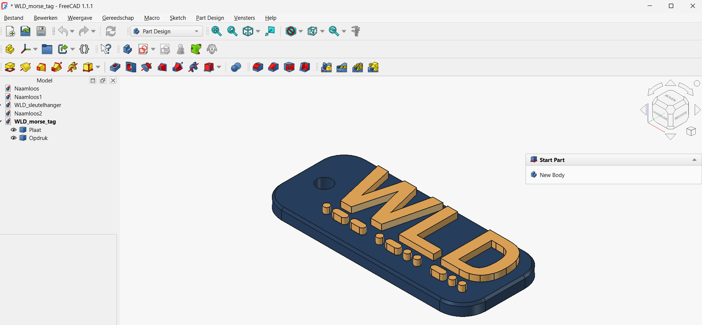
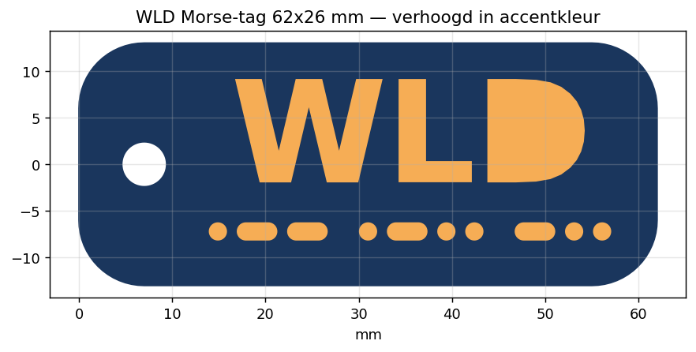

Project: WLD Morse-tag
Een massieve dog-tag met grote WLD-letters en — het insider-detail — de morsecode van WLD (·−− ·−·· −··) als verhoogde punten en strepen. Wie geen morse kent, ziet decoratie; een radioamateur leest gewoon "WLD". Dit project bouwt voort op de Yagi-sleutelhanger en voegt Pocket, Chamfer, hoekafronding in de schets en het positioneren van een schets op hoogte toe.
Deze projectoefening is voorlopig enkel in het Nederlands beschikbaar.Cet exercice de projet n'est pour l'instant disponible qu'en néerlandais.This project exercise is currently only available in Dutch.
Niveau: medior · Workbenches: Part Design, Sketcher, Draft, Part · FreeCAD: 1.1.1 · Richtduur: 60–90 min · Voorkennis: het Yagi-project of H01–H10

- een afgeronde rechthoek schetsen en volledig bepalen
- een rand afwerken met Chamfer en uitleggen waarom dat ook print-technisch nut heeft
- herhaalde vormen (punten en strepen) efficiënt schetsen met gelijkheidsconstraints
- een tweekleurig printplan opzetten met aparte objecten
01Wat ga je maken?
Een tag van 62 × 26 × 3,2 mm met hoeken R7, een sierafkanting van 0,6 mm langs de bovenrand, een sleutelringgat Ø4,5 op (x=7, y=0), WLD-letters (tekengrootte 15, vet) en de morse-rij. Letters en morse steken 1,8 mm boven de plaat uit. Doordat de plaat massief is, is deze hanger vrijwel onverwoestbaar.
Maattabel morse-rij
| Onderdeel | Maat |
|---|---|
| Punt | Ø 1,8 mm |
| Streep (afgeronde uiteinden) | 4,2 × 1,8 mm |
| Ruimte tussen symbolen | 1,2 mm |
| Ruimte tussen letters | 3,5 mm |
| Middellijn van de rij | y = −7,2 |
| Totale rijbreedte | 43 mm (begin ±x = 14) |
Spiekbriefje: W = ·−−, L = ·−··, D = −·· — samen 6 punten en 4 strepen.
In echte morse is een streep drie punten lang; dat respecteren we visueel bijna (4,2 ≈ 2,3 × 1,8 — iets korter omwille van de breedte). Belangrijker voor de print: een punt van Ø1,8 mm is bij een 0,4 mm-nozzle ruim vier printbanen breed — klein genoeg om elegant te zijn, groot genoeg om betrouwbaar te printen (richtwaarde, H16).
02Deel 1 — De plaat
- PDNieuw document → Part Design → Body maken → Schets maken op het XY-vlak — exact zoals in het Yagi-project.
- SKTeken een rechthoek rond de oorsprong. Bemaat: 62 × 26, symmetrisch om de X-as, linkerzijde op x = 0.Waarom symmetrisch: letters (+3,6) en morse-rij (−7,2) worden t.o.v. de middellijn geplaatst — met y = 0 als midden wordt elke verticale positie een eenvoudig getal.
- SKRond de vier hoeken af op R 7 met het afrondingsgereedschap van de Sketcher; bemaat één afronding en maak de andere drie gelijk.Waarom in de schets en niet in 3D: een 3D-afronding verwijst naar randen van het massief, en die verwijzingen kunnen breken bij wijzigingen (topological naming, H19). Wat in de schets kan, doe je in de schets.
- PDVolledig bepalen, sluiten, Pad 3,2 mm.
03Deel 2 — Ringgat en sierafkanting
- SKNieuwe schets op het XY-vlak: cirkel, middelpunt op de X-as, straal 2,25, middelpunt op x = 7. Sluiten → Pocket, door alles.Waarom een aparte Pocket en geen tweede cirkel in de plaatschets: zo is het gat een eigen, herkenbare stap in de modelboom — wie het gat later wil verplaatsen weet meteen waar.
- PDSelecteer de bovenste omtrekrand van de plaat en pas Chamfer 0,6 mm toe (H10). Controleer je selectie vóór je bevestigt.Waarom: design — de schuine rand vangt licht en maakt de tag "af". Print — scherpe bovenranden rafelen sneller; een afkanting verbergt dat. Extraatje: 0,3 mm op de ónderrand vangt de olifantsvoet op (H16).
04Deel 3 — De WLD-letters
Net als bij de Yagi maken we het reliëf buiten de Body: apart object = eigen kleur = apart exporteerbaar.
- DRDraft → ShapeString: tekst WLD, grootte 15, vet lettertype (bv. C:\Windows\Fonts\arialbd.ttf).
- DRZet de Placement op Z = 3,2 zodat de tekst bóvenop de plaat ligt, en positioneer in het bovenaanzicht: startpunt x ≈ 17, y ≈ −2. Controleer de marges: rechts van de D minstens ±5 mm tot de rand, bovenaan minstens ±3 mm vrij, en blijf uit de hoekafronding.Waarom die marges: dit is een geleerde les — een eerdere versie met grotere letters zag er in het vlak prima uit, maar de D liep tegen de hoekafronding aan en de letters plakten tegen de bovenrand. De gebogen hoek eet je rechtermarge sneller op dan je denkt: meet t.o.v. de échte rand, niet de omschreven rechthoek.
- PTPart → Extruderen: Z, 1,8 mm, massief. Verberg de ShapeString.Waarom mag de extrusie hier wél op 3,2 mm beginnen (en bij de Yagi niet): deze plaat is massief — élk punt van de letters rust volledig op de plaat. De kleurgrens ligt vanzelf exact op Z = 3,2.

05Deel 4 — De morse-rij
- SKMaak een losse schets op het XY-vlak (buiten de Body; lukt dat niet direct, maak ze en sleep ze in de modelboom uit de Body). Zet de Placement op Z = 3,2.
- SKTeken de rij van links naar rechts: punten als cirkels (Ø1,8), strepen als sleuven (slot-gereedschap: twee halve cirkels verbonden door rechten) van 4,2 × 1,8. Alle middelpunten op y = −7,2. Volgorde: ·−− (W) · 3,5 mm · ·−·· (L) · 3,5 mm · −·· (D), met 1,2 mm tussen de symbolen.Waarom "gelijk maken" hier extra loont: tien symbolen los bematen is vragen om fouten. Bemaat één punt en één streep volledig en maak de rest gelijk — dikkere punten wijzigen wordt dan één maat aanpassen. Zelfde denkwijze als bij de vijf Yagi-elementen.
- SKVolledig bepalen, sluiten.
- PTPart → Extruderen: 1,8 mm, massief.
- PTNetjes (optioneel): selecteer letterobject + morse-object → Part → Boolean → Vereniging tot één object "Opdruk".
06Deel 5 — Kleuren en eindcontrole
- PDKleur de plaat navy en de opdruk amber (rechtsklik → uiterlijk/kleur).
- PDEindcontrole in het 3D-zicht: opdruk overal óp de plaat (niets zweeft of steekt onderaan door), marges rondom de letters, gat open, afkanting langs de hele bovenrand, morse correct: ·−− ·−·· −··.
07Naar de printer
Plat printen, geen support, geen brim nodig (grote vlakke onderzijde). Eén extruder: beide objecten samen als STL + kleurwissel op Z = 3,2 mm. Multi-material: plaat en opdruk als aparte STL's (H23). Richtwaarden: kalibreer op je eigen printer.
08Veelgemaakte fouten
- Letters te groot of te hoog → ze lopen de hoekafronding of de rand in. Marges checken in het bovenaanzicht vóór je extrudeert.
- Morse-schets op Z = 0 laten staan → de rij zit ín de plaat verstopt. Placement op Z = 3,2 zetten (achteraf corrigeren kan ook — zo leer je Placement kennen).
- Symbolen los bemaat i.p.v. gelijk gemaakt → werkt, tot je iets wijzigt. Gelijkheidsconstraints (H08).
- Verkeerde rand bij de Chamfer → afkanting op een zijkant of het gat. Fout? Verwijder de Chamfer-feature uit de boom en doe het opnieuw (H22).
- Morse fout overgenomen → pijnlijk voor een radioamateur. Dubbelcheck: ·−− ·−·· −··.
- Massieve plaat → reliëf mag bovenop beginnen; open basis (Yagi) → reliëf vanaf de bouwplaat.
- Hoekafrondingen eten je marge op: meet t.o.v. de echte rand.
- Wat in de schets kan (afronding!), doe je in de schets — robuuster dan 3D-features.
- Eén referentiesymbool + gelijkheidsconstraints = de hele morse-rij in één maat aanpasbaar.
1. Zet je eigen roepletters erop, mét de juiste morse. Past de rij niet? Kies zelf: symboolgrootte, tussenruimte of plaatbreedte — en beargumenteer je keuze. 2. Verzonken tekst op de achterkant (clubnaam): ShapeString + Pocket i.p.v. reliëf — wat verandert er aan het printverhaal (H17)? 3. Tweede gat rechts, zodat de tag als naamplaatje aan een tas kan.
Kant-en-klare parametrische macro (ook je eigen call + morse via parameters!) en de printinstructie: WLD_morse_tag.FCMacro · Printinstructie